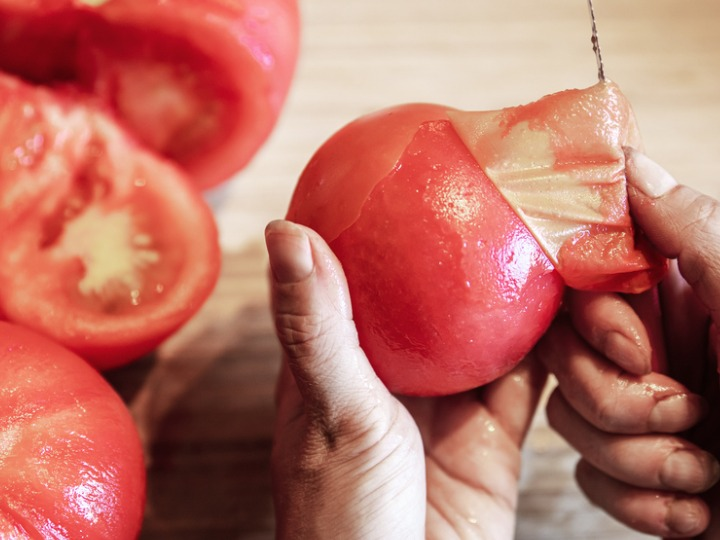
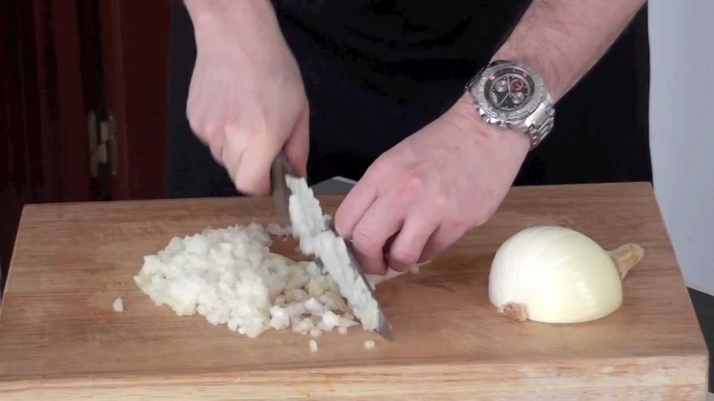
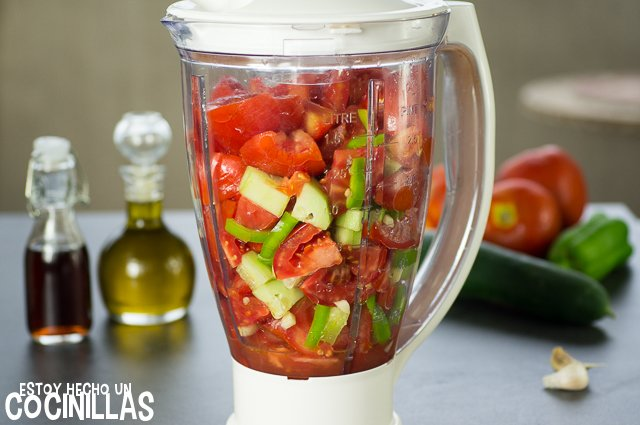
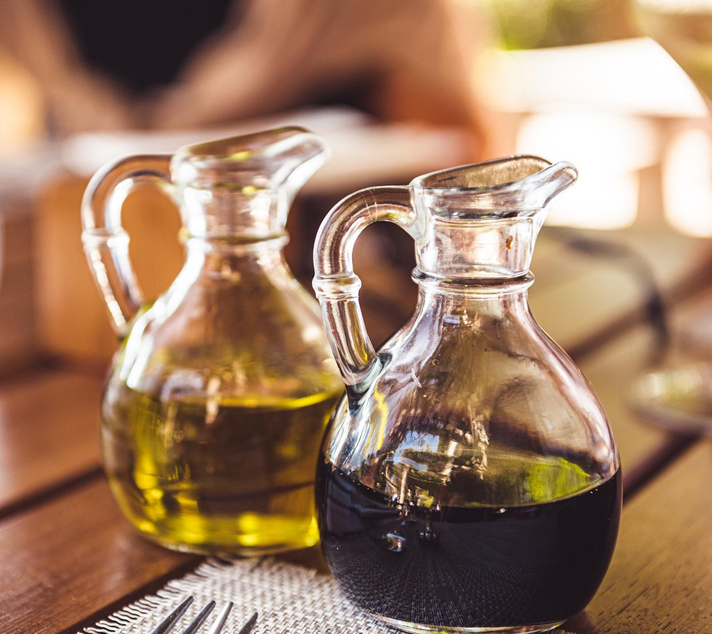

Segundo plato: Gazpacho con aguacate Segundo plato: Gazpacho con aguacate
Segundo plato: Gazpacho con aguacate Segundo plato: Gazpacho con aguacate Índice:
Índice: Paso a Paso
Paso a PasoLa elaboración del gazpacho con aguacate es prácticamente la misma a cualquier otra versión de esta sopa fría. No vamos a usar pan, así que el reposo previo no es tan necesario, o al menos no hace falta que sea tan largo. Podemos pelar los tomates si no tenemos una batidora o robot potente.
Trocear la cebolleta y colocar en agua fría durante 30 minutos si se quiere suavizar su sabor. Lavar y trocear todas las hortalizas, colocándolas en un cuenco grande o vaso de robot de cocina. Añadir una buena pizca de sal, un poco de vinagre y un chorrito de aceite de oliva. Incorporar la pulpa de aguacate mezclada con zumo de limón y remover bien.
Dejar reposar si se desea media hora o más tiempo, en la nevera. A la hora de hacer el gazpacho podemos retirar el ajo si lo queremos aún más suave. Empezar a triturar con batidora, robot de cocina o procesador de alimentos, subiendo la velocidad para triturar bien las pieles. Remover de vez en cuando y seguir triturando.
Cuando se obtenga una mezcla homogénea, empezar a añadir aceite en hilo mientras se tritura para emulsionar, o echarlo de golpe y triturar a alta velocidad. Probar y corregir de sal, o añadir más vinagre o aceite. Agregar agua al gusto para dar con la textura deseada, triturando cada vez.
Si no hemos pelado los tomates o no tenemos un robot potente, podemos pasar el gazpacho por un colador chino o tamiz para dejar una textura mucho más fina y delicada.
 Resultado final
Resultado final